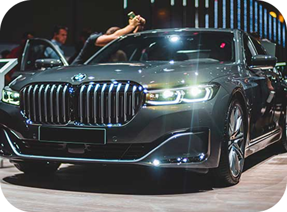

The UV rays, dirt’s, marks, stains and muddy particles are always in contact with the vehicle’s body fading out the shine of the car. Here comes our car ceramic coating service in Dubai, based on nanotechnology and installing a protective layer over the auto body paint. This will rescue the car’s body with direct contamination of external harmful elements and your car will remain in excellent condition!
Book Gargash Car Workshop
We have all necessary advance tools at our Auto body workshop, assuring car owners they get high graded ceramic coating service in Dubai. The coating perfectly synchronized with the car’s body paint and never break or wash away. This proves that ceramic coating is a long term and durable solution. Save your priceless vehicle with car ceramic coating service in Dubai!
The ceramic coating will repel the water and it will never stay over the car’s body. Thus, it is hard for the stains and dust marks to adhere with the body. This saves your car and even make the car washing service less frequent.
Your car is always exposed directly to the sunlight and harmful rays, that’s why the paint will begin to fade and oxidize. There comes ceramic coating that adds a protective layer, like a firm barrier and escape the direct connection of auto body with the external environment.
The ceramic coating service will make your car’s look glossy, shiny and elegant. Drive confidently on the roads with your near, clean and beautifully looking vehicle.